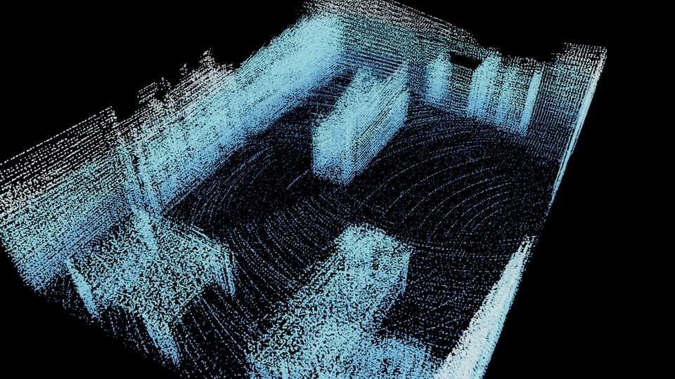
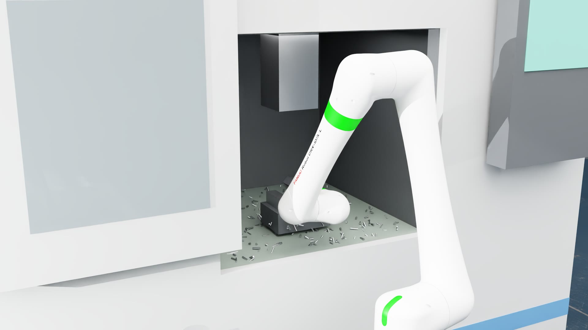
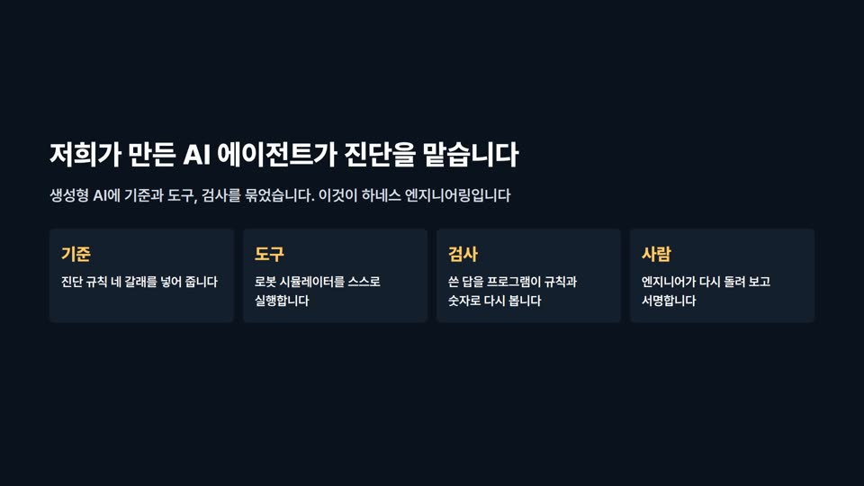
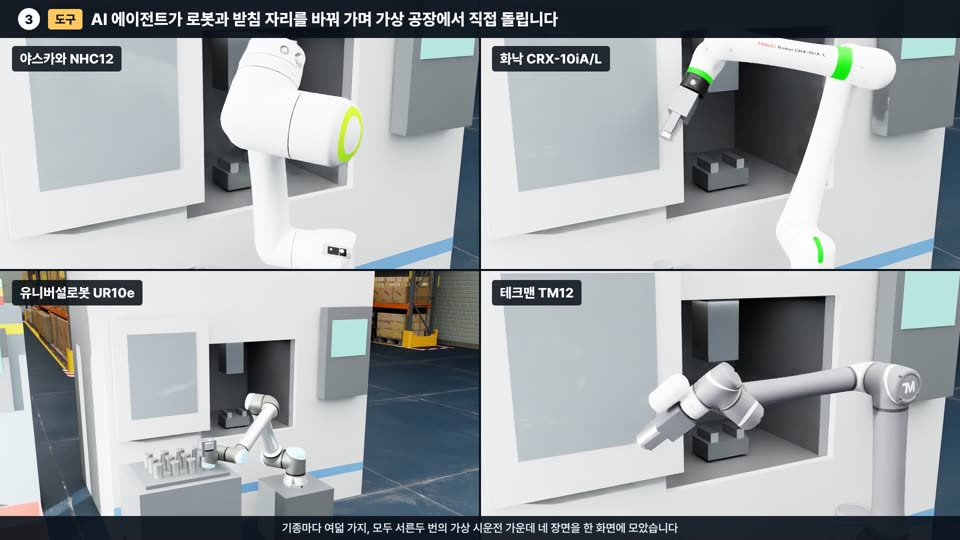
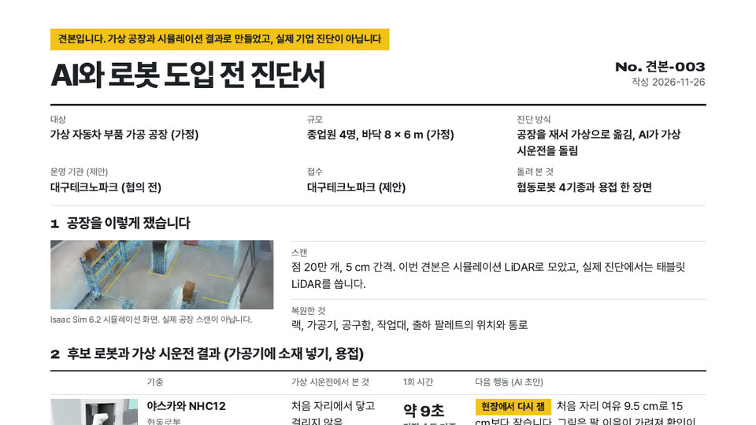
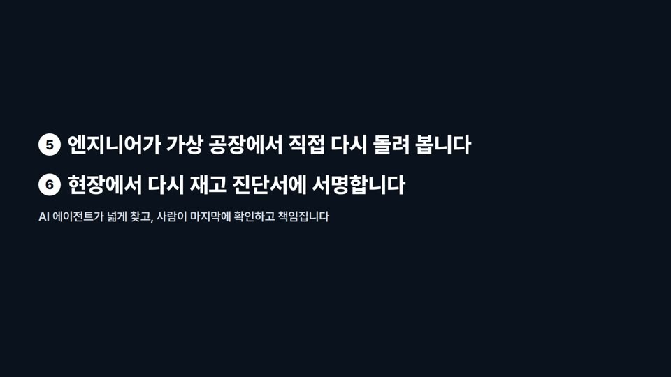
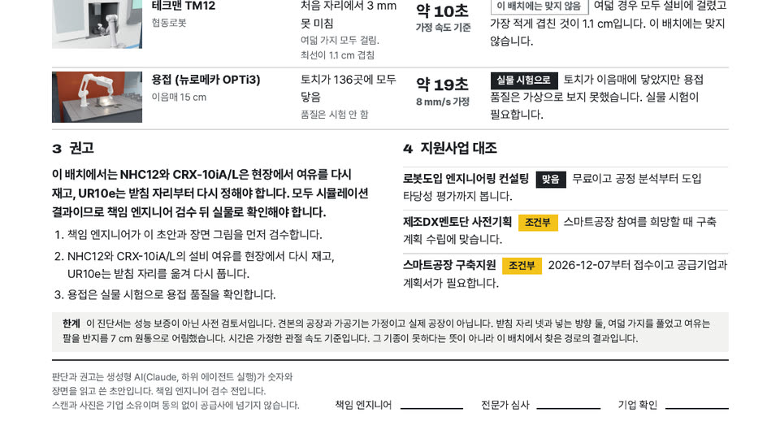
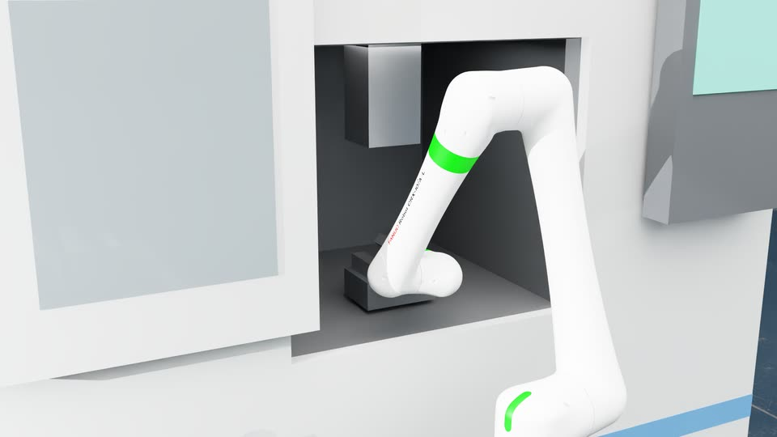
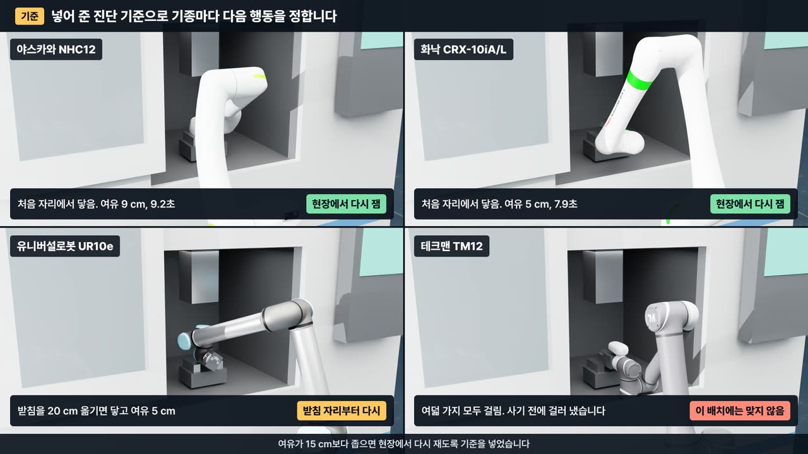
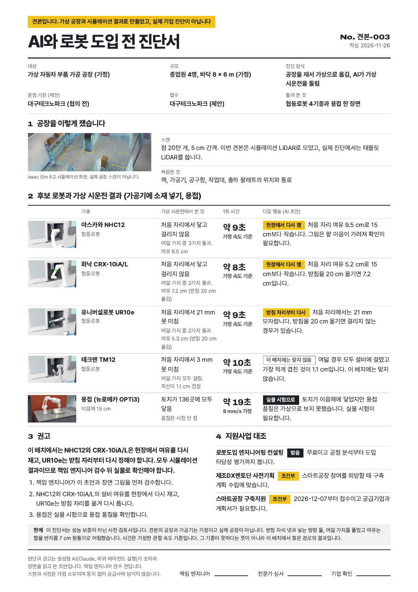

공장 스캔, 가상 공장 구축
엔지니어
공장을 찾아가 3차원 깊이 카메라로 스캔하고 사장님과 한 시간 이야기합니다. 스캔을 가상 공장으로 옮깁니다.


힘들고 더럽고 위험해서 사람이 안 오는 일을 3D 작업이라고 합니다. 엔지니어가 공장을 스캔해 가상 공장을 만들고, AI 에이전트가 로봇 후보를 골라 그 안에서 돌려 본 뒤, 엔지니어가 서명한 진단서 한 장을 드립니다. 화면은 모두 저희가 만든 가상 공장입니다.
우리 공장에서도 될지를 투자 전에 확인해 주는 지원은 작은 공장까지 닿지 않습니다. 이 제안이 풀려는 문제입니다.
AI를 들이면 불량률이 많게는 이만큼 줄고, 설비 가동률은 15~25% 오른다는 분석이 있습니다.
AI를 들였거나 들일 계획이 있는 중소 제조기업입니다. 스마트공장을 들인 기업 가운데서도 5.2%입니다.
대구 뿌리산업 사업체 한 곳의 평균 종사자입니다. 전국 평균은 8.9명입니다. 투자 한 번의 실패가 곧 경영 위기입니다.
"인공지능(AI)이 생산성을 높여준다고는 하는데, 정작 우리 공장엔 어떻게 적용해야 할지 모르겠더라고요."
한 중소 제조업체 대표의 말입니다. 대표의 말과 40%, 15~25%(BCG 분석), 1.7%, 5.2%(중소벤처기업부 2024년 스마트제조혁신 실태조사)는 전자신문 2025-07-23, 5.0명과 8.9명(대구정책연구원 연구, 2024년 기준)은 매일신문 2026-10-13 보도에서 읽었습니다.
AI 에이전트가 협동로봇 네 기종을 가상 공장에서 서른두 번 돌려 보고 진단서 초안을 쓰기까지입니다. 가공기와 작업 순서는 저희가 가정했고, 네 칸은 한 대씩 따로 돌린 것을 한 화면에 모았습니다.
로봇은 사 주지 않습니다. 맞는지 가려 드립니다. AI 에이전트가 넓게 찾고, 엔지니어가 마지막에 확인하고 책임집니다.
엔지니어
공장을 찾아가 3차원 깊이 카메라로 스캔하고 사장님과 한 시간 이야기합니다. 스캔을 가상 공장으로 옮깁니다.

AI 에이전트
공장의 치수와 작업, 로봇 회사의 공개 사양을 읽고 맞을 만한 기종을 여러 회사에서 고릅니다.

AI 에이전트
후보 로봇의 실제 모델을 가상 공장에 넣고, 자리를 바꿔 가며 닿는지, 걸리는지, 몇 초 걸리는지를 잽니다.

AI 에이전트
시뮬레이션이 잰 숫자와 렌더한 장면을 읽고 초안을 씁니다. 입력에 없는 숫자는 프로그램이 잡아냅니다.

엔지니어
초안에 적힌 경우를 가상 공장에서 직접 다시 돌려 봅니다. 가장 좁은 곳은 현장에서 줄자로 다시 잽니다.

엔지니어
서명한 진단서를 사장님께 드리고 설명합니다. 살지는 사장님이 정합니다.

들 수 있는 무게 10~12.5 kg, 팔 길이 1.3~1.4 m급 협동로봇 네 기종을 같은 가공기 앞에 세웠습니다. 받침 자리 넷과 넣는 방향 둘, 기종마다 여덟 가지씩 서른두 번을 계산했고 걸리지 않는 길은 일곱 개였습니다. 사양표만 봐서는 알 수 없는 차이입니다.
닿음
처음 세운 자리에서 닿았습니다. 가장 좁은 곳의 여유는 9 cm, 한 번 넣고 나오는 데 9.2초입니다.
닿음
처음 세운 자리에서 닿았습니다. 여유는 5~7 cm, 한 번에 7.6~7.9초입니다.

받침 옮기면 닿음
같은 자리에서는 2 cm 못 미쳤습니다. 받침을 20 cm 옮기면 닿고 여유는 5 cm, 9.0초입니다.
모두 걸림
여덟 가지 모두 설비에 걸렸습니다. 가장 나은 것이 1 cm 겹침이라 현장에서 다시 재야 합니다.
그 기종이 못하다는 뜻이 아닙니다. 저희가 가정한 배치에서 저희가 찾은 경로의 결과입니다
팔을 반지름 7 cm 원통으로 어림했습니다. 소재를 놓는 바이스와의 겹침은 계산에서 뺐습니다
소재를 집어 바이스에 놓고 문 밖으로 나오기까지입니다. 관절 속도는 초당 90도로 가정했습니다
네 기종 모두 주축에 걸렸습니다. 앞에서 수평으로 넣어야 했습니다
뉴로메카 OPTi3로 이음매 15 cm를 토치가 끝까지 따라갔습니다. 용접 품질은 가상으로 알 수 없어 실물 시험으로 넘깁니다
두산 M1013과 레인보우 RB10-1300은 공개 모델을 시뮬레이터용으로 바꾸는 데서 막혀 결과에서 뺐습니다. 로봇의 성능과는 상관없습니다
새 모델을 학습시키지 않았습니다. 이미 있는 생성형 AI에 기준과 도구, 검사를 붙여 묶었습니다. 이 일을 하네스 엔지니어링이라고 부르고, 이렇게 묶은 것이 저희가 만든 AI 에이전트입니다.
진단 규칙을 넣습니다. 여유가 15 cm보다 좁으면 현장에서 다시 잽니다
AI가 시뮬레이션을 직접 돌리고 결과 숫자와 렌더한 장면을 읽습니다
규칙과 다른 답, 입력에 없는 숫자는 프로그램이 걸러냅니다
엔지니어가 직접 다시 돌려 확인하고 서명해야 진단서가 됩니다
AI는 장면도 읽습니다. 로봇 대신 흰 원통 하나만 그려진 그림과, 아래 팔이 입구 턱에 겹친 그림을 짚어 냈습니다. 놓친 그림도 있어서 장면은 경로 전체의 숫자와 함께 보고, 엔지니어의 확인을 빼지 않습니다.

측정값에서 진단서 한 장까지 가는 단계를 두 번 돌렸습니다. 두 번 모두 다섯 줄의 다음 행동이 규칙과 같았고, 입력에 없는 숫자는 0건이었습니다.
AI가 규칙을 어기지 않고 없는 숫자를 짓지 않는지를 본 것이고, 판단력을 잰 것은 아닙니다. 견본은 AI가 쓴 초안 그대로이며 엔지니어의 검수를 거치지 않았습니다. 가정한 공장으로 만든 것이라 실제 기업 진단이 아닙니다.

진단 방식이 통하는지를 좁은 곳에서 먼저 확인하고 넓힙니다. 공장 수는 대구광역시 공장등록 자료(2026년 8월 25일)를 저희가 센 값입니다.
대구에 등록된 절삭가공 공장입니다. 소재를 넣고 빼는 반복 작업이 하루 종일 이어집니다.
그 가운데 생산품에 자동차 부품을 적은 곳입니다. 같은 부품을 많이 되풀이해 만들어 진단 결과를 오래 씁니다. 여기서 20곳을 먼저 찾습니다.
용접은 토치가 이음매를 따라가는지까지만 가상으로 보고, 품질은 실물 시험으로 넘깁니다.
공장을 재는 부담은 3차원 스캔 한 번으로
3차원 카메라 한 번에 가공기, 통로, 문까지 담습니다
후보 모델을 넣어 닿는지, 걸리는지 봅니다. 자리가 좁아 못 들어가는 공장을 미리 가려냅니다
스캔은 하루, 사장님 시간은 면담과 결과 설명 두 번입니다
서명하기 전에 가장 좁은 곳만 줄자로 다시 잽니다
누가, 언제, 얼마 (저희 제안)
기관의 역할과 금액은 저희가 가정한 단가로 낸 제안치입니다.
아래 두 사례는 저희 대상보다 큰 공장의 결과이고, 로봇만이 아니라 AI와 자동화를 함께 들인 성과입니다. 그래서 약속하는 값이 아니라 견줄 목표로 삼습니다.
들이기 전에 기준값을 재고, 들인 뒤 3개월과 6개월에 다시 재서 견줍니다. 시범 한 해 안에는 스무 곳 가운데 열 곳 이상이 60일 안에 실물 시험, 도입 신청, 접기 가운데 하나를 정하는지를 먼저 봅니다. 접은 공장도 맞지 않는 설비를 사지 않은 것이라 성과로 셉니다. 다음 걸음을 뗀 곳이 한 곳도 없으면 이 사업을 접습니다.
가장 가까운 것은 한국생산기술연구원의 무료 로봇도입 컨설팅입니다. 전문가가 로봇 선정과 배치 설계를 돕고, 시뮬레이션으로 검토한 사례도 있습니다. 다만 전국에 한 해 120건이고, 로봇을 들이기로 한 기업이 요청서와 공정 동영상을 내야 합니다. 이 제안은 그 앞 단계입니다.
2026 대구 대학(원) AI 드래프톤에 낸 대학생 팀 지그널의 정책 제안입니다. 대구시의 공식 사업이 아니며, 기관의 역할은 저희 제안입니다.
가공기와 작업 순서는 저희가 가정했고 로봇만 실제 기종의 모델입니다. 실제 공장을 스캔해 가상 공장으로 옮겨 본 적은 아직 없습니다. 2027년에 두세 곳을 먼저 스캔합니다.
현장의 말은 보도와 2023년 로봇 엔지니어링 컨설팅 사례집에서 가져왔습니다. 2027년에 열 곳을 만나 묻습니다.
스캔 오차와 어림 오차를 덮으려고 넉넉히 잡은 제안치입니다. 이를 받치는 측정은 아직 없습니다.
선행 사례는 큰 공장의 결과입니다. 직원 10명 미만 공장에서 같은 폭이 나온다는 근거는 아직 없습니다.
스무 곳, 한 해 약 1억 800만 원은 가정한 단가로 낸 제안치입니다. 엔지니어 한 명이 스무 곳을 맡을 수 있는지도 먼저 스캔해 보고 정합니다.